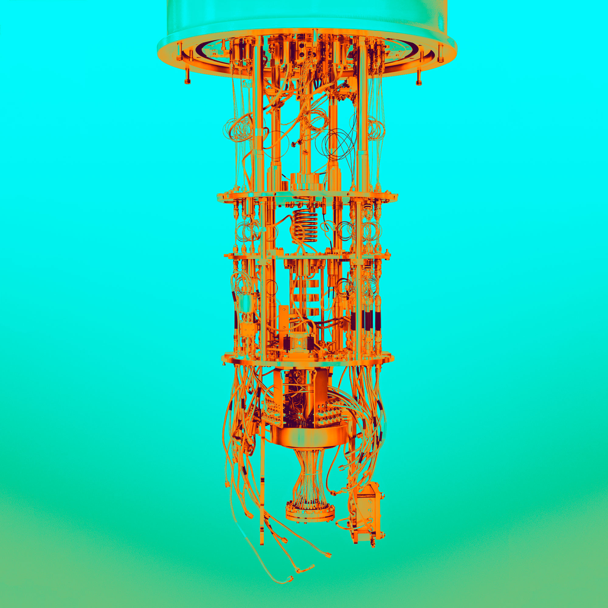
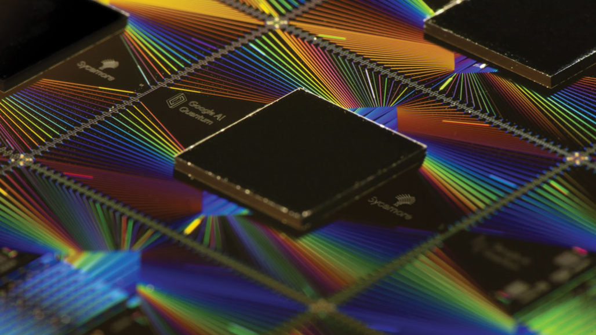
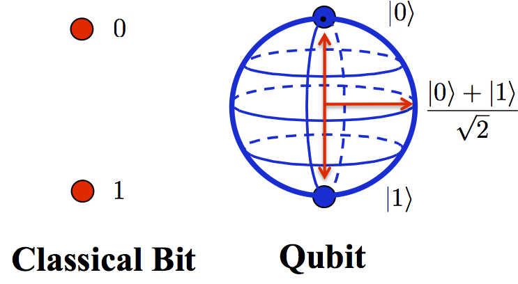
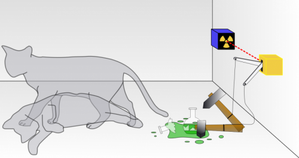
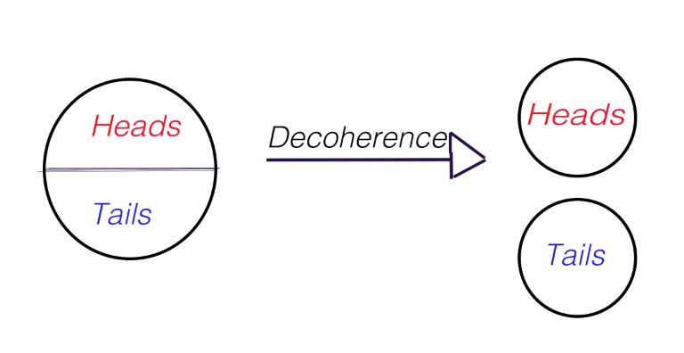

What are Quantum Computers?
 Quantum computers are machines that use the properties of quantum physics to store data and perform computations. Quantum computers use the natural world to produce machines with staggeringly powerful processing potential. Scientists first came up with the idea for quantum computers as a way to better simulate quantum mechanics, which is still the main purpose for them.
Why are Quantum Computers Intereting?
Quantum computers grant humans unimaginable technological capabilities. With quantum computers, scientists are able to simulate molecules to build new drugs and materials to solve problems and answer questions pysicists have been asking for years. For example, Wall Street could use them to optimize portfolios and stimulate economic forecasts. Quantum computing can assist scientists in speeding up discoveries in fields like machine learning and Artificial Intelligence.
Google's Quantum Computers
 October of 2019, google achieved what is called quantum supremacy, in which quantum computers can beat out even the world's most powerful supercomputers for certain tasks. Google's quantum computer was able to perform a computation that would take the world's fastest supercomputer years to solve in just 200 seconds. But, IBM challenged this accomplishment. they said one of its massive supercomputer networks could simulate a quantum computer and theoretically solve the same problem in a matter of days, not the 10000 years that Google had claimed. Either way, this was a major accomplishment for quantum computers.
| Term | Description | Picture |
|---|---|---|
| Quibit | Typically subatomic particles such as electrons or photons that quantum computers use instead of using 0s and 1s like your average computer. Different companies manage and generate quibits differently as it is a challenge. The goal is to isolate the qubits in a controlled quantum state. Qubits can represent numerous possible combinations of 1 and 0 at the same time. |  |
| Superposition | The ability to simultaneously be in multiple states is superposition. Reaserchers manipulate quibbits to put them in superposition by using precision lasers or microwave beams. A quantum computer with several qubits in superposition can look through many potential outcomes at the same time. Ex: Schrödinger's cat |  |
| Entanglement | Scientists can create pairs of "entangled" quibits, meaning the two members of a pair exist in a single quantum state. Changing the state of one of the qubits will instantly change the state of the other in a predictable way. This happens even if they are separated by very long distances. Nobody really knows how or why entanglement works, not even Einstein. Still key to quantum computer's power. | |
| Decoherence | The interaction of qubits with their environment in ways that cause their quantum behavior to decay and in the end, disappear. The slightest vibration or change in temperature (noise)can cause them to fall out of superposition before their job has been properly done. Researchers try to do their best to protect qubits from the outside world in those supercooled fridges and vacuum chambers. |  |